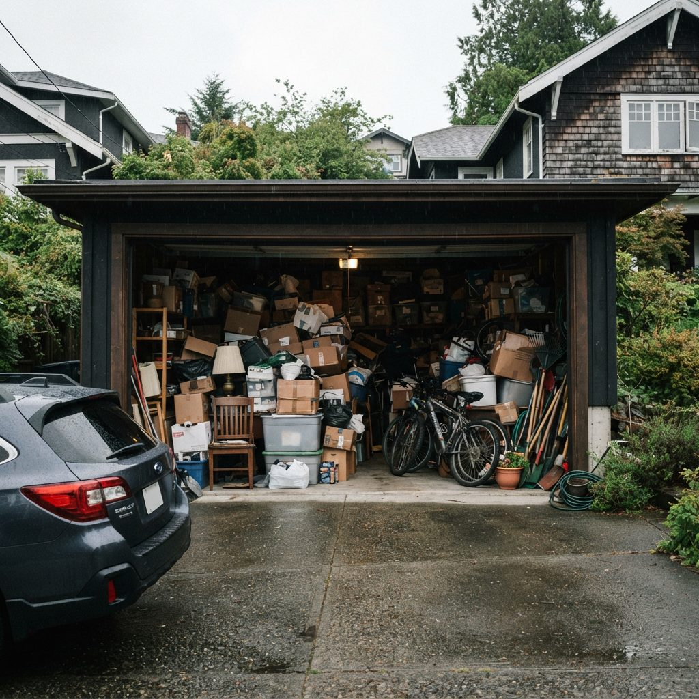

Sellers usually leave the garage until last because it isn't part of staging. Then the photographer arrives, the realtor asks whether the car can fit in for the wide shot, and the answer is no. A garage packed to the door is the one room a buyer will mentally clear out and deduct from their offer.
Most sellers need two different garages: one that looks spacious in photos and showings while the family still uses it, and one that is empty on possession day. This page is about planning both from the date you list. Call (587) 804-9266 with your listing date and we'll tell you if it's realistic.
Two Deadlines, Two Different Garages
In Alberta, possession is usually at noon on the completion day in your purchase contract, and the standard AREA contract requires you to give the buyer vacant possession. That means the garage is part of the deal. Nobody needs it empty for the listing, though. It needs to look like room for cars, and it has to stay that way through weeks of showings while you're still using it.
| Before listing photos | Before possession day | |
|---|---|---|
| Goal | Reads as two parking spaces in a wide photo | Vacant, swept and nothing of yours left |
| You're living there? | Yes, so the bikes, tools and winter tires stay | No, the movers have been |
| What leaves | Everything you won't use before moving day: duplicates, the broken stuff, the boxes from your last move | Everything else, including whatever the movers refused |
| What stays visible | One wall of kept items, off the floor, nothing in front of the door to the house | Items the contract includes with the house, and nothing else |
| Floor | Swept; stains cleaned if the photos will show the slab | Swept at minimum, with oil spots dealt with where the cars sat |
| Who sees it | Photographer, buyers, their agents | The buyer, at the final walk-through and on day one |
Doing the first clear-out properly makes the second one small. Whatever you get rid of before listing is something you don't pack, don't pay a mover to carry, and don't have to deal with in the last week, when the house is half in boxes.

Illustration, not a client's garage.This is the garage a buyer sees in listing photos and subtracts from their offer. Nearly all of it could leave before the photos, and the car belongs inside for the wide shot.
Count Back From Your Photo Date
Listing photos are the first fixed date, and the garage has to be done before them. Here is the schedule we plan from. Send us your dates and we'll fit our days around them. If the hard part is deciding what to keep, sell or leave rather than the hauling, our garage decluttering service turns that walk-through into one sit-down sorting session.
| When | Garage task | Why then |
|---|---|---|
| 2 to 3 weeks before photos | Walk-through with us; you mark what you're moving, selling or leaving with the house | Time to list tools, the second fridge or the canoe for sale before they're hauled |
| About 10 days before photos | Pre-listing clear-out: junk, donations, hazardous products and recycling go | Enough slack if the date moves forward, and nothing for you to step around for the next ten days |
| 3 to 5 days before photos | Floor cleaned if the slab will be in the shot; kept items set on one wall | Concrete needs time to dry, and wet patches show in photos |
| Photo day | Cars in or out, depending on what your realtor wants; door opener working; lights on | A garage with a car parked in it shows buyers there's room |
| During showings | Keep the floor clear and close the bins | Buyers open the man-door to the yard and look up at the rafters |
| After the movers, before possession | Final sweep-out: mover rejects, the last bins, the garbage that piled up while packing | Vacant possession is due on completion day, usually by noon |
In a fast spring market a listing date can move up a week on a realtor's advice. If that happens, call us. A clear-out usually takes us one day, and it's the only part of this schedule that can't be squeezed.
Already have a photographer booked?
Call (587) 804-9266 with the date and your address. We'll tell you on the call whether we can clear the garage before then.
What Your Movers Won't Put on the Truck
The garage holds most of the things moving companies refuse to carry. Each company has its own list, so ask yours, but these are the usual ones:
- Propane cylinders from the barbecue and patio heater
- Gasoline in jerry cans, and fuel left in the mower, trimmer and snowblower
- Paint, stains and solvents, including half-used cans from the last repaint
- Aerosols: spray paint, lubricants, insect spray
- Pool, garden and car chemicals: fertilizer, weed killer, antifreeze, motor oil
- Car batteries and lithium batteries from old tools
Sellers usually find this out on moving day, when the crew leaves a row of jerry cans and paint tins on the garage floor. By then the buyer's walk-through is close, and you're driving to a drop-off site the day before possession.
In Calgary, most of this goes free to the City's household hazardous waste drop-off at fire stations: barbecue-size propane cylinders under 30 lb, paint, solvents and garden chemicals, up to 20 litres per visit. Electronics and tires are also free at City sites. We sort these out during the pre-listing clear-out and take them in on the drop-off's terms. Keep one jerry can of gas if you need it for the mower before you go, and we'll take it on the final sweep-out. The current site list is at calgary.ca.
Decide What Stays With the House Before Anyone Takes Pictures
Listing photos show buyers what they're buying. If the wall shelving, the overhead storage rack and the garage heater are in the pictures, a buyer will expect them on possession day. As a rule, things attached to the house go with the sale under Alberta's standard contract unless the contract excludes them. Your realtor writes those exclusions, so settle the garage list with them before the photographer arrives.
| Item | The usual question | What to do before listing |
|---|---|---|
| Door opener remotes and keypad code | Buyers expect every remote | Find them all now; put them in one drawer in the house |
| Wall-mounted shelving, slatwall, hooks | Attached, so usually included | If you're taking it, exclude it in the contract or take it down before photos |
| Ceiling storage racks | Bolted to the trusses | Empty them before photos; buyers look up |
| Garage heater | Hard-wired or gas, so usually included | Make sure it works; buyers ask about it |
| EV charger | Hard-wired chargers are usually treated as attached | Decide early and tell your realtor |
| Freestanding workbench, fridge, freezer, tool chests | Not attached, so yours unless you agree otherwise | Sell, move or remove; empty fridges before the power goes off |
| Leftover paint for the house | Some buyers want touch-up paint | Keep one labelled can per room colour; everything else goes to the hazardous drop-off |
That's a working list, not legal advice. The contract you sign is what counts, and your realtor or lawyer can tell you how it treats a particular item.
What the Buyer's Inspector Needs to See
Many Calgary buyers make their offer conditional on a home inspection. An inspector can only report on what they can reach, and anything blocked gets written up as "not inspected", which makes buyers nervous. In the garage, keep these clear:
- The door into the house. Nothing stacked against it, and it should close fully on its own if it's built to.
- The overhead door and opener. Inspectors usually run it and test the auto-reverse, so the track and the safety sensors near the floor need to be clear.
- The slab. Cracks and heaving are easier to explain than boxes hiding them.
- Walls and the foundation edge. Water staining along the bottom of the drywall or the sill plate is what they're looking for. If boxes are stacked against the wall, they can't check it.
- Anything electrical or mechanical in the garage: the panel, the heater, the hot water tank or furnace if the house has them out there.
The pre-listing clear-out leaves all of this exposed by default. If you find stains or cracks once the garage is empty, talk to your realtor before the listing goes live.

Illustration, not a client's garage.This is what's under the boxes in a lot of garages. Oil where the car sat and a hairline crack are normal, but buyers notice them, so it's better that you see them before the photos do.
For Listing Agents
If you're the realtor, the garage is usually the last thing standing between you and photos. Here's how we work with you:
- Dates first. Give us the photo date and the possession date. We book the clear-out and the final sweep-out against those two dates.
- Access. If the sellers have already moved or work days, we can use the lockbox or a time you set.
- Photos both ways. We send before-and-after pictures of the garage to you and the seller, so nobody has to drive over to check.
- One decision-maker. If anything in the garage is uncertain (a part of the house, or a neighbour's?), we ask the person the seller named on the first call, not whoever happens to be home.
For a listing where the seller has died or moved into care, the process is slower and the family decides what goes. Our estate garage cleanout page covers how we handle that.
What We Look at When We Quote
We quote a seller's garage after seeing it, in two parts: the pre-listing clear-out and the final sweep-out. You can book one or both. These are the things that move the price:
- How much leaves now, and how much leaves later. If you get rid of more before listing, the final sweep-out is quicker.
- Weight going to the landfill. The City of Calgary charges $113 a tonne for residential garbage in 2026, or $25 flat for a load under 250 kg. Old concrete, tiles and gym weights add up quickly.
- What can stay out of the landfill. Hazardous products, electronics, tires and textiles are free at City sites. Scrap metal sells. Working furniture and tools get donated.
- Appliances. Each fridge or freezer with refrigerant carries a $17 surcharge at City sites.
- Floor work. A sweep is included. Degreasing oil spots and taking road salt off the slab is a separate floor cleaning job, best done while the garage is empty.
- Access. Loading from a front driveway is quick. A detached garage behind the yard, reached only through a gate, takes longer.
Package rates for a general cleanout are on our garage cleanout Calgary page. For a sale we price both visits together once we've seen the garage, so you know the full cost before you list.
Listing in a Calgary Winter
Calgary homes list all winter, and that's when the garage gives sellers the most trouble.
Salt and grit on the slab
Every car that comes in off a sanded road drips brine. When a chinook melts the snow on the car and the garage dries out again, the floor is left with white rings and a grey crust where the tires sit. It's the first thing that shows in a photo of an empty garage. Sweeping won't shift it. It needs a wash with the right cleaner and a drying window, which in January means a warm day or a garage heater.
The snowblower and the tires
You'll need the snowblower until the day you leave, and movers won't take it with fuel in the tank. Run it dry or drain it in the last week. Winter tires stored in the garage are free to drop at City sites if you're not taking them, but most sellers take them along.
Detached lane garages and front-drive doubles
In inner-city neighbourhoods like Mount Royal, Elbow Park and Altadore, the garage is often detached on the back lane. Lanes often aren't ploughed, and snow in the lane decides whether the truck can reach the door. In the newer communities in the deep south and north, like Cranston, Mahogany or Evanston, the garage is usually a double attached at the front. Those are quick to load, but the driveway has to be clear of snow and the cars moved out of the way.
Selling outside the city
We do the same work in Airdrie, Okotoks, Cochrane and Chestermere. Acreage sales often come with a shop as well as a garage, so tell us about outbuildings when you call.
Once the garage is empty
If you'd like the walls, door tracks and windows done for the buyer, a full garage clean covers them. If you're buying a smaller place and need to decide what you can bring, garage decluttering is the slower, one-item-at-a-time version. And if you're listing in spring, our spring garage cleanout pairs the clear-out with a floor wash after the melt.